Ferramentas Instáveis, o equipamento de Manilium e o Talismã dos Blocos.
Armadura de Manilium
A armadura de Manilium tem a proteção da netherita e pode ficar ainda mais forte. Vestida, ela tem um modelo 3D de cavaleiro: viseira, bochechas e guarda de nuca no capacete; placa peitoral, cinto largo, saiote de placas, ombreiras de duas camadas, manoplas e uma capa vermelho-escura no peitoral; joelheiras nas calças; cano reforçado e biqueiras nas botas (as molduras pintam junto com a tinta). Todos os itens de Manilium têm bordas cósmicas: um céu de estrelas que se mexe conforme você move a câmera ou o item.
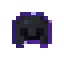
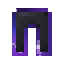
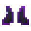
Mesa de ferraria
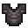
➜
Fortalecer
No Nature Infuser, coloque a peça na entrada e uma Orbe de Mana na alimentação: +1 de defesa por orbe, até +5 em cada peça.
Nature Infuser
+
➜
em cima: entrada · embaixo: alimentação
Os itens de Manilium não podem mais ser pintados (os que já tinham cor continuam com ela).
Enfeite de Manilium
A Barra de Manilium também é um material de enfeite: na mesa de ferraria, junte qualquer molde de enfeite + qualquer armadura (de ferro, diamante, Elemental, de Mago...) + Barra de Manilium. Cada peça ganha +1 de armadura (+4 com as 4 peças) e o desenho do enfeite fica com o céu cósmico se mexendo, igual às bordas do Manilium.
Conversor de Almas
Qualquer peitoral pode receber um Conversor de Almas embutido no Nature Infuser.
Espada de Manilium
Uma espada que cresce com você e carrega um Bloco Mágico na guarda.
Mesa de ferraria
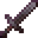
➜
Dano sem limite
Cada Orbe de Mana infundida no Nature Infuser dá +1 de dano, sem limite.
Nature Infuser
+
➜
em cima: entrada · embaixo: alimentação
Bloco na guarda
Coloque a espada vazia na entrada e um Bloco Mágico na alimentação: o bloco aparece na guarda e a espada passa a usar todas as habilidades dele, além de cortar normalmente. Para tirar o bloco, coloque a espada sozinha na bancada.
Nature Infuser
+
➜
em cima: entrada · embaixo: alimentação
Armadura de Mago
Uma armadura de pano mágico no estilo de mago: chapéu pontudo de aba larga com faixa dourada e a ponta dobrada para trás, manto longo azul até os pés com gola, abertura e barra douradas, faixa na cintura, mangas largas, calças escuras e sapatos de bico virado. Protege como ferro e é ótima para encantar.
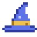
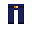
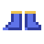
Bancada de trabalho
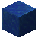
➜
Vestindo
A mana volta
0 peças
1 de mana a cada 120s
1 peça
a cada ~96s
2 peças
a cada ~72s
3 peças
a cada ~49s
4 peças
1 de mana a cada 25s
Feita com Tecido Mágico (as receitas seguem o formato das armaduras normais; o manto leva um Bloco de Lápis no meio). A Sabedoria dos Atributos acelera ainda mais.
Tecido de Mago
Os conjuntos de armadura do mod lado a lado.
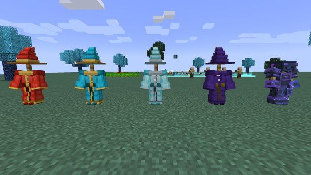
Mago, Elementais (fogo, água, gelo, trovão) e Manilium
Armadura Elemental
A Armadura de Mago melhorada: o mesmo modelo (chapéu, manto, calças e sapatos), com as cores do elemento. Receita: a peça de mago no meio com Diamantes Elementais em volta (chapéu 3, manto 7, calças 6, sapatos 2). Defesa de diamante, durabilidade quase de netherita, 2,5 de resistência e conta como peça de mago para a volta da mana. O elemento vem do Altar de Rituais: a peça no altar e, nos 4 pedestais, o Bloco Mágico do elemento, 1 Cristal Instável e 2 Essências de Mana (8.000 de energia). O bloco tem 30% de chance de ser gasto (senão fica no pedestal). Dá para trocar de elemento depois. Cada peça vestida dá o efeito no nível 1; com as 4 peças do mesmo elemento, nível 2.
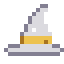
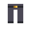
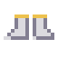
Bancada de trabalho
➜
Elemento
Bloco no ritual
Cada peça
4 peças
Fogo
Bloco de Fogo
Resistência ao Fogo
Quem te bate pega fogo
Água
Bloco de Água
Poder do Conduto
+ Graça do Golfinho
Gelo
Bloco de Gelo
Anda sobre a água; não congela nem fica lento
Anda sobre a lava também (vira obsidiana por um tempo)
O degrau entre o diamante e o Manilium, feito com Diamante Instável e gravetos (receitas iguais às de diamante). Minera o mesmo que o diamante, mas tem 2.000 de durabilidade, é mais rápido e cada ferramenta tem uma habilidade. Conserta na bigorna com Diamante Instável.
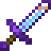
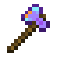
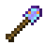
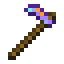
Ferramenta
Habilidade
Espada Instável
7 de dano. 25% de chance de um golpe elemental: fogo (queima 4s), gelo (Lentidão II e congela), água (empurra e Fraqueza) ou raio (+3 de dano)
Picareta Instável
Agachado: quebra 3x3 na face que você está minerando
Machado Instável
Derruba a árvore inteira de uma vez (só árvores com folhas naturais). Agachado corta um tronco só
Pá Instável
Agachado: cava 3x3
Enxada Instável
Ara 3x3 de uma vez. Agachado ara um bloco só
Bancada de trabalho
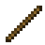
➜
Bancada de trabalho
➜
Talismã dos Blocos
Um cinto mágico que guarda até 9 Blocos Mágicos. Os blocos guardados giram num círculo atrás de você e o talismã aparece nas costas.
Bancada de trabalho
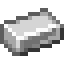
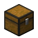
➜
Ação
Efeito
Mana
Direito com o talismã na mão
Abre o armazenamento (só aceita Blocos Mágicos)
—
Equipar
Slot de cinto do Curios (sem o Curios, funciona no inventário)
—
Tecla G (mão livre)
Abre a roda de blocos: aponte e clique (ou solte a tecla) para pegar o bloco
—
Tirar o bloco da mão
Trocar de slot ou jogar no chão devolve o bloco ao talismã
—
A tecla pode ser trocada em Opções → Controles → Magic & Blocks.
Rolar para desviar (tecla R)
Com qualquer item (ou mão vazia), aperte R no chão para dar uma cambalhota na direção em que está andando (para frente se estiver parado). Durante a rolagem você fica invulnerável por 0,4s e desvia de qualquer ataque, inclusive dos golens. Recarga de 2 segundos: um ícone ao lado direito da hotbar mostra quando dá para rolar de novo (apagado enquanto recarrega, pisca quando fica pronto). Gasta um pouco de fome. Não funciona na água, voando ou montado.
Câmera de ombro (TAB)
Na terceira pessoa de costas (F5), aperte TAB: a câmera chega mais perto e vai para o ombro direito, e a mira aparece no meio da tela. O personagem vira para o ponto exato da mira, então golpes, magias e flechas vão onde você está mirando. TAB de novo desliga. A tecla pode ser trocada nos controles.
Peitoral da Besta
Feita com as Escamas de Leviatã. Tem um modelo 3D próprio: o capacete é a cabeça do Leviatã (o seu rosto aparece pela boca), o peitoral tem o anel e asas de verdade saindo das costas, as ombreiras têm espinhos e as botas, garras. Cada peça tem 2 de armadura a mais que a de netherita e 4 de resistência. Pintura: na Mesa de Ferraria, sem molde, a peça (de Leviatã ou da Besta Celestial) com um corante pinta as escamas cinzas e com um minério (ou gema/barra: diamante, esmeralda, redstone, lápis, ouro, cobre, ametista, quartzo...) pinta as partes roxas; na Celestial elas são uma galáxia animada na cor do minério.
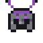
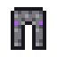
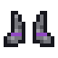
Bancada de trabalho
➜
Vestindo
Efeito
Cada peça
Corta 15% do dano recebido (as 4 juntas deixam só 40%: protege 2,5x mais)
4 peças
Nenhum dano do void: nem o void normal nem o ar da dimensão do Vazio machucam
Nadar
Cada peça nada 35% mais rápido (as 4: 2,4x)
Armadura Elemental de Leviatã
No Nature Infuser, uma peça da Armadura Elemental na entrada e uma Escama de Leviatã na alimentação. A peça mantém o elemento e os encantamentos, ganha +2 de armadura, +1,5 de resistência e conta como peça de Leviatã (os 15% por peça e a proteção do void com as 4).
Nature Infuser
+
➜
em cima: entrada · embaixo: alimentação
Peitoral Abissal
Armadura do Vazio feita na bancada com Cristal Abissal e Fragmento do Vazio. Tem os mesmos números da netherita (não queima na lava). Cada peça tira 25% do dano do void e do ar do Vazio (dá para misturar com outras peças que resistem ao void); com 4 peças, nenhum dano.
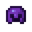
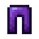
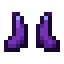
Bancada de trabalho
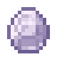
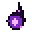
➜
Bancada de trabalho
➜
Bancada de trabalho
➜
Bancada de trabalho
➜
Espada da Besta
Uma adaga de garra do Leviatã com 50 de dano, feita com 2 Garras sobre 1 Escama. Na segunda mão, o botão direito bate exatamente como na principal (dano, encantamentos, crítico), e cada mão tem a própria recarga: dá para alternar direita e esquerda.
Bancada de trabalho
➜
Defesa
Com duas armas "duas mãos" (uma em cada mão), segure o botão direito (sem shift; um clique rápido continua sendo o golpe da segunda mão): elas se cruzam e bloqueiam como escudo o que vem de frente. As adagas da besta só defendem durante a Fúria.
Fúria da Besta
Com uma adaga em cada mão (comum, Celestial ou Lâmina do Caos), segure Shift + botão direito por 3 segundos e solte. Enquanto carrega, as adagas se cruzam e um círculo de aura vermelha cresce nos pés.
Fúria da Besta
Bônus
+25% de dano, Regeneração I e +35% de velocidade
Custo
4 de mana ao ativar e mais 4 a cada 20s (renova sozinha enquanto houver mana e as duas adagas)
Escudos
As adagas desativam escudos como um machado
Dash (R)
No lugar da rolagem: um dash vermelho que corta quem estiver no caminho (12 de dano e fogo)
Espada da Besta Celestial
A Espada da Besta com Manilium: 60 de dano e lâmina roxa-escura com galáxia. Feita no Nature Infuser (mantém encantamentos e nome). Durante a Fúria da Besta a galáxia fica vermelha.
Nature Infuser
+
➜
em cima: entrada · embaixo: alimentação
Lâmina do Caos
A lâmina negra-carmesim com galáxia: 65 de dano e sobe com Estrelas igual à Espada de Manilium. Feita no Altar de Rituais: a Espada da Besta (comum ou Celestial) no altar e 4 Barras de Manilium + 4 Cristais Instáveis nos pedestais. Como são 8 itens, o altar aceita também 4 pedestais nas diagonais, a 2 blocos dele.
Funciona com a Fúria da Besta como as outras adagas.
Skin acorrentada: no Nature Infuser, a Lâmina do Caos com uma Corrente vira a Lâmina do Caos Acorrentada (veios vermelhos incandescentes que viram galáxia vermelha na Fúria).
Peitoral de Metal Solar
A armadura que a Guardiã do Sol veste, no estilo das estátuas antigas: elmo espartano com a abertura em T (o seu rosto aparece) e uma crista de chifres em V, asinhas brancas dos lados, ombreiras grandes em camadas com espinhos, peitoral em divisas com o sol no meio, saiote de placas e grevas pontudas. As placas são de aço escuro, com detalhes brancos e pontas douradas. Feita na Mesa de Ferraria: o Molde de Melhoria do Sol, uma peça da Armadura Abissal e uma Barra de Metal Solar (mantém os encantamentos).
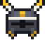
Bancada de trabalho
➜
Mesa de ferraria
➜
Vestindo
Efeito
Cada peça
A proteção da Armadura da Besta +2 e corta 19% do dano; quem bate em você pega fogo
4 peças
Imune a fogo, ao void e ao ar do Vazio; a esquiva (R) vira o dash amarelo da Guardiã, que corta quem estiver no caminho
Pintura (Mesa de Ferraria, sem molde): um corante tinge as placas de aço e um minério (ou gema/barra: diamante, esmeralda, redstone, lápis, ametista...) pinta as pontas douradas. A Barra de Metal Solar volta para o dourado.
Adaga Solar
Adaga de Metal Solar com 60 de dano que bota fogo em quem acerta. Como as adagas da Besta, é duas mãos (na segunda mão o botão direito golpeia) e, com uma em cada mão, Shift + segurar o direito por 3s entra na Fúria, só que amarela: aura, onda e dash amarelos.
Bancada de trabalho
➜
As partes douradas das adagas, da lança, do escudo e das espadas também pintam com minério na Mesa de Ferraria.
Lança Solar
Lança de Metal Solar: 65 de dano, alcance 1,5 bloco maior e bota fogo. Segure o botão direito para carregar o arremesso de luz (o mesmo da Guardiã): um círculo amarelo mostra onde vai cair (cresce com a carga, até 48 blocos) e, ao soltar, a lança de luz explode em área com fogo (até 38 de dano; 3 de mana).
Bancada de trabalho
➜
Escudo Solar
Escudo redondo com o sol no meio. Defende como um escudo comum e, enquanto defende, projéteis (flechas, bolas de fogo...) e magias que vêm de frente voltam para quem atirou. Defendendo, aperte o botão esquerdo para aparar: no próximo 1 segundo um golpe corpo a corpo volta inteiro no atacante (e bota fogo). Aparar gasta 1 de mana e desativa o escudo por 3 segundos.
Como obter
Altar de Rituais: um escudo comum no altar, 4 Barras de Metal Solar nos pedestais normais e 4 Barras do Vazio nas diagonais. Veja a aba Rituais.
Espada de Metal Solar
Espada de Metal Solar com 70 de dano que bota fogo. Como a Espada de Manilium, guarda um Bloco Mágico (no Nature Infuser) e usa as habilidades dele.
Bancada de trabalho
➜
Nature Infuser
+
➜
em cima: entrada · embaixo: alimentação
Espada Radiante
A Espada de Metal Solar abençoada pelas mariposas: igual a ela (70 de dano, fogo, guarda um Bloco Mágico), mas cada golpe tem 20% de chance de invocar uma Mariposa Radiante que voa até o alvo e morde (2 corações por mordida). No máximo 10 mariposas por jogador; cada uma dura 30 segundos.
Como obter
Altar de Rituais: a Espada de Metal Solar no altar, 2 Almas Radiantes e 2 Asas de Mariposa nos pedestais. Mantém o bloco guardado, a pintura e os encantamentos.
Balde de Manilium Derretido
Com o Tinkers' Construct instalado, o Manilium vira material de ferramentas, armaduras e escudo. Ele derrete na fornalha virando Manilium Derretido, um líquido com uma galáxia animada. Derrete a 950°, então a fornalha com lava comum já funciona. Escamas (45 mb) e Garras (90 mb) de Leviatã também derretem no mesmo líquido, e o novo material Leviatã deixa as espadas do Tinkers "duas mãos" e com a Fúria da Besta. O líquido machuca como o void (sem fogo) e não queima itens. Com o Silent Gear instalado, Manilium e Barra do Vazio viram materiais com encantabilidade alta.
Material
Traços
Ferramentas (Tinkers)
Nível netherita, Enderference e Experienced
Armaduras (Tinkers)
Proteção Mágica
Manilium (Silent Gear)
Stellar, Renew e Magnetic
Barra do Vazio (Silent Gear)
Void Ward, Hard e Adamant
Escama de Leviatã (Silent Gear)
Besta (espadas, adagas, facas e katanas ficam duas mãos e entram na Fúria) e Light
Cristal Abissal (Silent Gear)
Rasgo do Vazio (Wither)
Cristal Instável (Silent Gear)
Surto de Mana (chance de devolver mana a cada golpe)
Os itens do próprio Magic & Blocks continuam iguais e encantáveis. Sem esses mods instalados nada disso aparece.
Bancada de Joias
Joias encaixáveis: armas, cajados e a Espada de Manilium têm 2 encaixes, cada peça de armadura 1 e a Manopla Solar 5. Na Bancada de Joias, coloque o item no slot da esquerda e as joias nos encaixes da direita (tirar a joia devolve ela). As joias são feitas no Nature Infuser: um Diamante na entrada e o catalisador na alimentação.
Bancada de trabalho
➜
Joia
Catalisador
Efeito
Rubi
Pó de Blaze
+1 a 8% de dano e o alvo pega fogo
Safira
Gelo Compactado
O alvo fica lento por 0,5 a 3s
Topázio
Barra de Cobre
4 a 15% de chance de um choque (+5 de dano)
Ônix
Barra do Vazio
-1 a 8% de dano recebido (até 40% somando tudo)
Jade
Maçã Dourada
+1 a 8 de vida máxima
Ametista
Orbe de Mana
+1 a 4 de mana máxima
Pedra Solar
Barra de Metal Solar
+2 a 10% de velocidade
Opala
Membrana de Phantom
-4 a 16% de recarga da esquiva
Como obter
Cada joia sorteia o valor quando é pega (em passos de 0,5; quanto maior, mais rara). Na bigorna, duas joias iguais com o mesmo valor viram uma com +0,5.
Manopla Solar
A Manopla Solar, de Metal Solar com o Coração da Luz, tem 5 encaixes e aparece vestida na mão do jogador, com as joias nos nós dos dedos e a grande nas costas da mão, em primeira e terceira pessoa. Vai no slot de mãos do Curios, ou é só segurar (em qualquer mão) que ela se veste no braço. Os efeitos das joias dela valem o tempo todo; sem o Curios instalado, valem só de ela estar no inventário. Com 5 joias diferentes vira o Poder Infinito: tudo vale 1,5x e as joias pulsam. Segurada, o soco com ela dá 4 de dano; vestida no Curios (ou na segunda mão), o soco de mão vazia bate +6.
Bancada de trabalho
➜
Asas Solares
As Asas Solares são as asas de luz da Guardiã do Sol. Vão no slot do peito e planam igual à elytra, sem gastar durabilidade e sem precisar de foguetes: voando, aperte R para ganhar embalo (1 de mana). Só aparecem no jogador quando ele começa a voar: abrem, batem devagar (a onda corre da base até a ponta) e dobram um pouco a cada batida.
Como obter
Altar de Rituais: uma Elytra no altar, 2 Asas de Mariposa, 2 Asas Brilhantes e 2 Barras de Metal Solar nos pedestais (use também os das diagonais). A Asa de Mariposa cai das Mariposas e a Asa Brilhante das Mariposas Brilhantes (3% cada).
Arco de Mana
O Arco de Mana (Cristais Instáveis e Linha de Mana) atira normal quando há flechas. Sem flechas, gasta 1 de mana por tiro e atira uma Flecha de Mana azul (1,5x o dano de uma flecha comum). A animação de puxar mostra a flecha comum ou a de mana.
Bancada de trabalho
➜
Katana do Ronin
Hierarquia das armas e armaduras (do mais fraco ao mais forte): Instáveis, Lobo e Coroa Goblin; Ork, Adaga dos Viajantes, Mago e Elemental; Abissal e Martelo Fraturado; Manilium; Leviatã; Metal Solar e Besta Celestial; Lâmina do Caos; Katana do Ronin (100), Adagas do Pantan0 (80) e Martelo de Herfestus (90). Os tiers de cima ficam todos acima da netherita e cortam um pouco mais do dano (9% Abissal, 14% Manilium, 19% Leviatã e 26% com o conjunto de Metal Solar ou Besta Celestial), e os chefes causam 25% a mais de dano.
Luva de Lobisomem
A Árvore das Manoplas (Mesa de Maestria com a Luva de Lobisomem ou a Manopla Solar): Punho de Ferro (+10%), Soco Carregado (avança e soca 2x a 4x) → Mãos Pesadas (atordoa e enfraquece), Onda de Choque (soco no chão, 5 blocos) → Abalo (8 blocos e lentidão), Fúria do Lutador (transformação: +30% de dano, velocidade e roubo de vida, gasta mana) → Berserker, e o Campeão. A Luva de Lobisomem não tem mais garras.
Arco de Mana
Novas habilidades da Árvore do Arco (no botão de bater, sem puxar): Marca do Caçador (o alvo aparece pelas paredes e leva +20% de dano), Chuva de Flechas (18 a 30 flechas caem numa área) e Tiro Triplo (a próxima flecha sai em leque). A Flecha Perfurante e o Tiro Preciso gastam 1 de mana. Mirando mais de 6s, a mira começa a balançar.
Espada Pesada do Rei Goblin
Árvore da Espada: o Aparar agora se compra no meio da árvore; o Ronin ensina Imbuir Mana ou o Corte Limpo (uma barra com vermelho, amarelo e verde: solte no verde para um corte em área de 2x o dano). Entregando os Ossos de Ork, o Rei Goblin fica fortalecido para sempre (maior, 480 de vida, Terremoto de Osso com anéis para pular e Chuva de Lâminas); vencendo ele assim, ele ensina o Arremesso da Espada (a espada vai e volta cortando).
Rifle do Vazio
O Rifle do Vazio agora é como num jogo de tiro: segure o direito para mirar (zoom, a arma vai para o meio da tela e o tiro sai certeiro: 12 de dano, 48 blocos) e atire com o esquerdo (sem mirar: 9 de dano e o tiro abre). Cada tiro dá um coice na arma, e os cristais podem ser pintados com corante.
Manopla de Couro
A Manopla de Couro (couro em volta, lã em cima e linha no meio) veste na mão: 3 de dano, durabilidade de pedra e sem tempo de espera para bater, em qualquer mão (na segunda mão, o botão direito soca). Com ela o jogador luta como um boxeador, com animações próprias em primeira e terceira pessoa: base de guarda, jab reto, corrida, Soco Carregado e Onda de Choque. A skill Bloquear da Árvore das Manoplas (só no botão direito) levanta a guarda depois de 1,5s segurando e bloqueia como um escudo.
Bancada de trabalho
➜
Manopla Encantada
A Manopla Encantada (Cristal Instável, ferro e Cristal Instável; Essência de Mana dos lados da Manopla de Couro; Tecido de Mago embaixo) dá 5 de dano, tem 400 de durabilidade, é muito encantável e 15% dos socos soltam uma faísca arcana (+3 de dano mágico). As duas manoplas podem ser reforçadas na bancada com 4 lingotes de ferro ou ouro, diamantes ou netheritas em cruz em volta delas (mais dano e a durabilidade da ferramenta daquele metal). A Luva de Lobisomem agora tem as garras na palma e 10% de chance de deixar o alvo enjoado e sangrando.